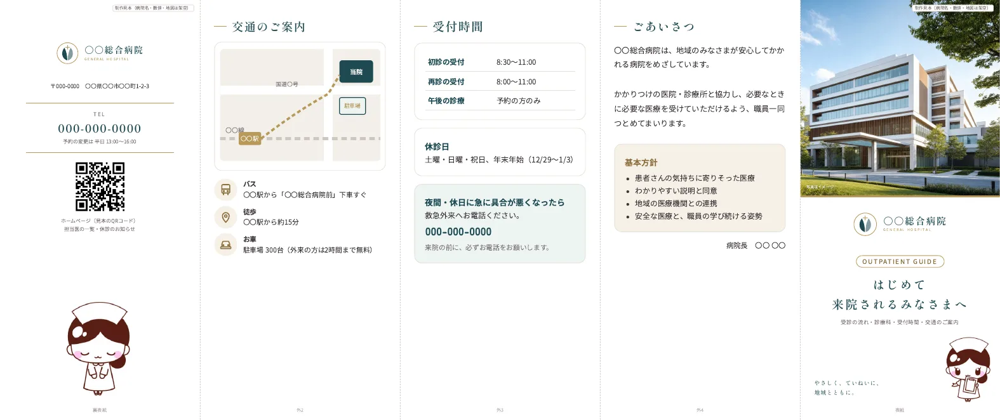
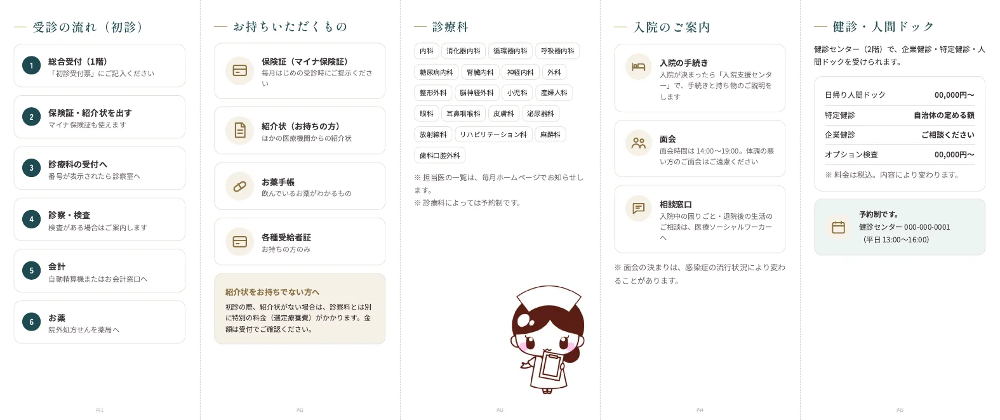
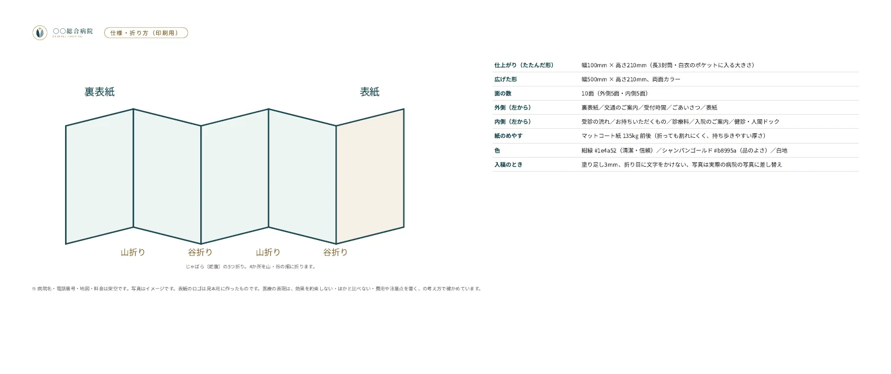

ZAZOU株式会社 ／ ZAZOU Lab
総合病院の「はじめて来院されるみなさまへ」。持ち歩きやすいじゃばら5つ折り（たたむと100×210mm）・両面10面に、受診の流れ・診療科・受付時間・入院・健診・交通をまとめた見本です。清潔感と品のよさを紺緑とゴールドで出し、ロゴも作りました。病院名・数値・地図は架空、写真はイメージです。
画像を押すと大きく開きます。イラストはフリー素材を使っています。


